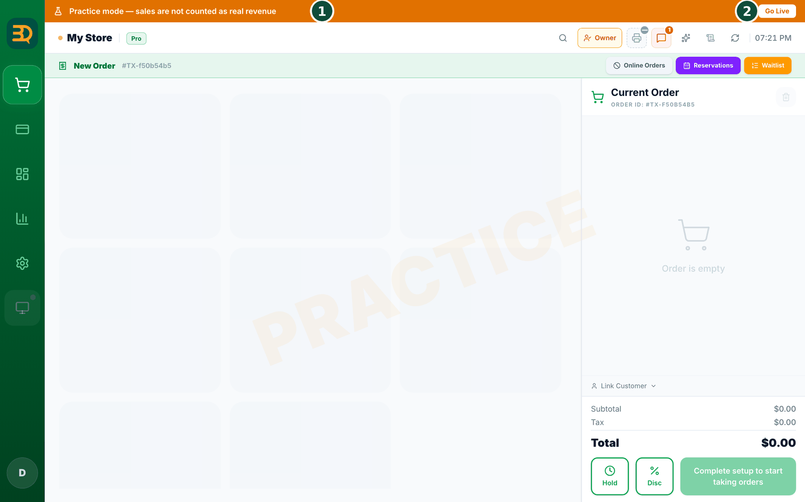
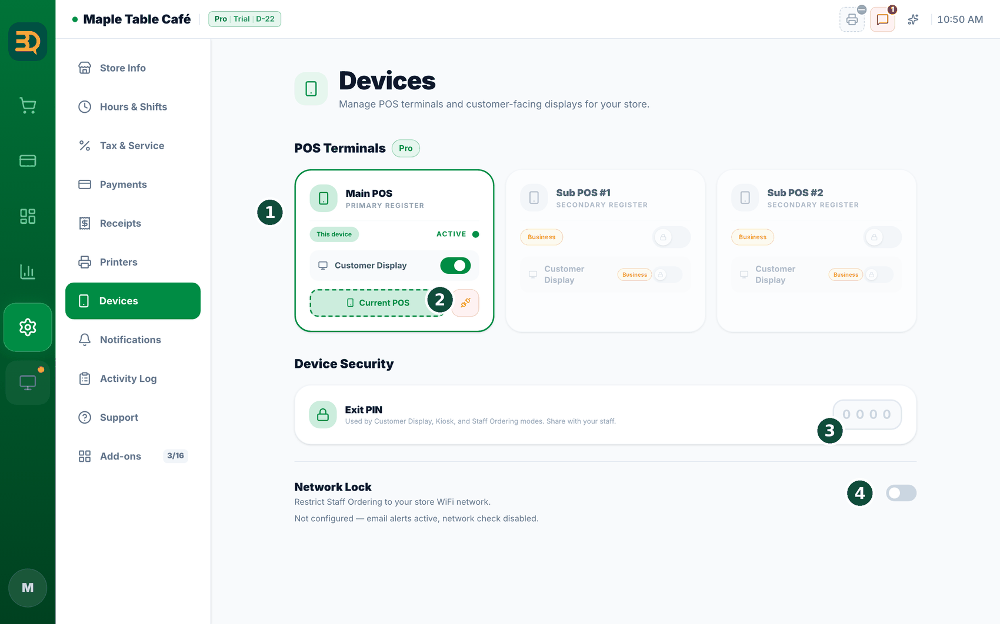
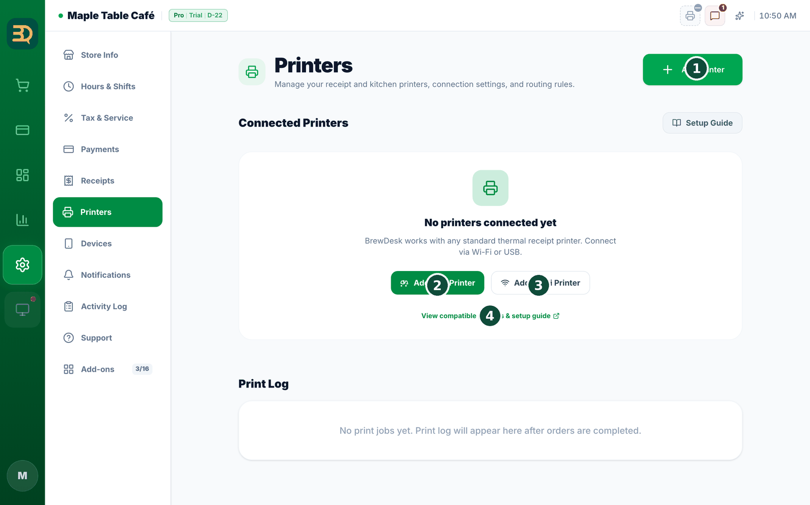
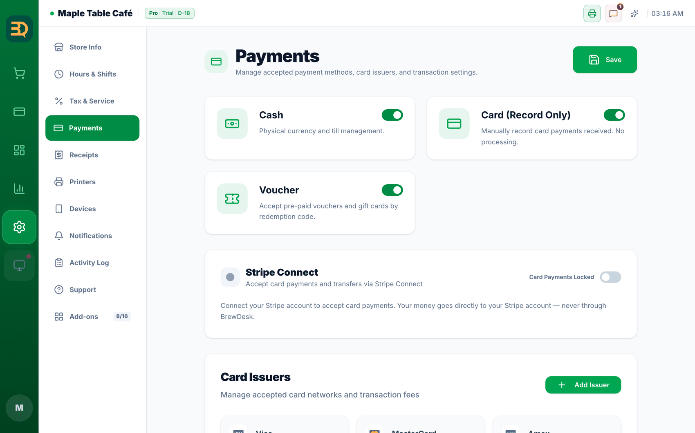

26설치 체크리스트
설치 기사가 매장에 BrewDesk를 설치하고 사장님께 넘겨 드릴 때 따라 할 순서표입니다. 위에서부터 하나씩 끝내고 확인 표시를 해 주세요. 준비할 기기와 네트워크 조건은 설치 준비물 & 네트워크에 정리되어 있습니다.
시작 전에
설치는 연습 모드에서 진행합니다. 연습 중에 넣은 주문은 실제 매출로 잡히지 않고, 마지막 단계의 Reset and go live로 깨끗이 지운 뒤 영업을 시작할 수 있습니다. 사장님 이메일을 받을 수 있는 상태인지도 확인해 주세요 — 메인 POS 지정, 추가 계산대 등록, 라이브 전환에서 이메일 인증 코드를 사용합니다.

- ☐ 계정 · 가입 — brewdesk.io에서 사장님이 실제로 받는 이메일로 가입하고 설정 마법사(업종 → 매장 정보 → 서비스 모드 → 애드온 → 플랜 → 메뉴 → 완료)를 마칩니다. 이메일을 잘못 입력했다면 바로 고쳐 주세요. → 처음 설정 · 로그인 이메일 변경
- ☐ 메인 POS 지정 — 카운터에 둘 기기에 BrewDesk 앱을 설치하고 사장님 이메일로 로그인합니다. 매장의 첫 기기는 자동으로 Main POS가 됩니다. 이미 다른 기기가 메인이라면 Replace Main POS(이메일 인증 코드)로 바꿉니다. → 기기 모드 & 고객 디스플레이 · 여러 대 기기 & 안정성

- ☐ 다른 기기 연결 승인 — 직원 주문 · 고객 디스플레이를 쓸 경우 먼저 메인 POS의
Settings › Add-ons에서 켭니다. 새 기기 앱에서 "메인포스에 새기기로 등록"을 누르고, 메인 POS 팝업에서 기기 용도를 골라 "승인"합니다. 추가 계산대(Sub POS)는 사장님 이메일 로그인과 인증 코드로 등록합니다. 기기마다Settings › Devices에서 이름("카운터 1" 등)을 붙여 둡니다. → 새 기기 붙이기 · 기기 한도

- ☐ 프린터 추가 · 테스트 인쇄 —
Settings › Printers에서 영수증 프린터(Main Receipt)와 주방 프린터(Kitchen)를 추가하고 Test Print로 종이가 나오는지 확인합니다. 글자가 잘리거나 한글이 깨지면 "인쇄가 이상한가요?"로 맞춥니다. 돈통을 쓰면 현금 서랍 옵션도 켭니다. → 영수증 & 프린터 · 프린터 준비물

- ☐ 결제 수단 · 카드 단말 —
Settings › Payments에서 사장님의 Stripe 계정을 연결하고, Cash · Card (Record Only) · Voucher 중 쓸 수단을 켭니다. 연결형 카드 리더는 Discover Readers → Connect로 연결합니다. 현금 우수리가 필요한 나라라면 여기서 함께 설정합니다. → 결제 받기 · 카드 단말 · 현금 우수리 - ☐ 세금 · 영수증 —
Settings › Tax & Service에서 세율과 Tax Inclusive Pricing(세금 포함 가격) 여부를 사장님과 확인합니다.Settings › Receipts에서 영수증 모양을, 카운터 매장은Settings › Tables에서 주문 번호를 설정합니다. → 세금 설정 · 주문 & 대기 번호 - ☐ 메뉴 — 카테고리 · 상품 · 옵션을 등록합니다. 기존 메뉴판이 있으면 AI 메뉴 만들기나 가져오기로 시간을 줄일 수 있습니다. 가격과 세금 표시를 사장님과 한 번 더 확인합니다. → 메뉴 만들기 · 가져오기 · 내보내기
- ☐ 직원 · PIN — 직원 기능을 쓰는 매장(Pro 이상)은
Settings › Add-ons에서 Staff를 켜고 직원별로 역할과 4자리 PIN을 등록합니다. 사장님 PIN을 설정하고, 매니저 PIN은 반드시 0000이 아닌 값으로 바꿉니다. 환불 등 권한 표를 사장님과 확인하고 자리 비움 잠금 사용 여부를 정합니다. → 직원 추가하기 · 권한 · 매니저 PIN - ☐ 테스트 주문 · 환불 · 마감 — 연습 모드에서 실제와 똑같이 해 봅니다: 주문 → 결제 → 영수증 · 주방 티켓 인쇄 확인 → 직원 주문 태블릿 주문이 메인 POS와 주방에 도착하는지 확인 → 환불(승인 PIN 확인) → 돈통 세션 시작 · 종료 → Close Day. → 주문 받기 · 환불 · 돈통 · 리포트 & 하루 마감
- ☐ 라이브 전환 — 메인 POS에서 화면 위쪽의 Go Live를 누릅니다. 확인 목록(매장 이름 · 주소 · 세율 · 메뉴 등)을 채운 뒤, 보통은 Reset and go live(연습 기록을 지우고 시작)를 선택하고 사장님 이메일로 온 인증 코드를 입력합니다. 메뉴 · 세금 · 프린터 · 직원 · Stripe 설정은 그대로 남습니다. → 라이브 전환
넘겨 드리기 전에 사장님과 함께 확인할 것. ① 사장님이 직접 대표 PIN으로 직책을 올리고 내릴 수 있는지, ② 메인 계산대가 꺼졌을 때 알림이 온다는 점, ③ 인터넷이 끊겨도 판매가 된다는 점(오프라인으로 쓰기), ④ 직원에게 직원 빠른 시작을 보여 줄 것.
설치 후에도 매장을 관리해 드린다면 총판(Installer partner) 연결을 사용합니다. 연결은 사장님 이메일로 가는 승인 메일로 승인되며, 사장님은 언제든 직접 해제할 수 있습니다(총판 연결 · 해제).